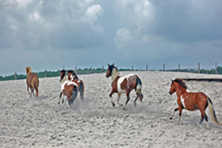
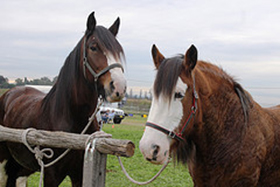
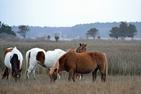
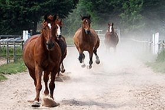

The Wild Horse (Equus ferus) is a species of the genus Equus, which includes as subspecies the modern domesticated horse (Equus ferus caballus) as well as the undomesticated Tarpan (Equus ferus ferus), now extinct, and the endangered Przewalski's horse (Equus ferus przewalskii). The Przewalski's Horse was saved from the brink of extinction and reintroduced successfully to the wild.

Wild horses on Assateague Island

Przewalski's Horse occupied the eastern Eurasian steppes

The term "wild horse" is used to refer to free-roaming herds of feral horses.

The horse family Equidae and the genus Equus evolved in North America
The Tarpan became extinct in the 19th century, though it was a possible ancestor of the domestic horse, and roamed the steppes of Eurasia at the time of domestication. However, other subspecies of Equus ferus may have existed and could have been the stock from which domesticated horses are descended. Since the extinction of the Tarpan, attempts have been made to reconstruct its phenotype, resulting in horse breeds such as the Konik and Heck horse. However, the genetic makeup and foundation bloodstock of those breeds is substantially derived from domesticated horses, and therefore these breeds possess domesticated traits.
The term "wild horse" is also used colloquially to refer to free-roaming herds of feral horses such as the Mustang in the United States, the Brumby in Australia, and many others. These feral horses are untamed members of the domestic horse subspecies (Equus ferus caballus), and should not be confused with the two truly "wild" horse subspecies.
Subspecies and their history
The Domestic horse (Equus ferus caballus).
The Tarpan or Eurasian Wild Horse (Equus ferus ferus), once native to Europe and western Asia. The Tarpan became effectively extinct in the late 19th century, and the last specimen died in captivity in a Ukraine zoo in 1909.
Przewalski's horse (Equus ferus przewalskii), also known as the Mongolian Wild Horse or Takhi, native to Central Asia and the Gobi Desert.
The latter two are the only never-domesticated "wild" groups that survived into historic times. However, other subspecies of Equus ferus may have existed and could have been the stock from which domesticated horses are descended.
Przewalski's horse
Przewalski's Horse occupied the eastern Eurasian steppes, perhaps from the Urals to Mongolia, although the ancient border between Tarpan and Przewalski distributions has not been clearly defined. Przewalski's Horse was limited to Dzungaria and western Mongolia in the same period, and became extinct in the wild during the 1960s, but was re-introduced in the late 1980s to two preserves in Mongolia. Although researchers such as Marija Gimbutas theorized that the horses of the Chalcolithic period were Przewalski's, more recent genetic studies indicate that Przewalski's Horse is not an ancestor to modern domesticated horses.